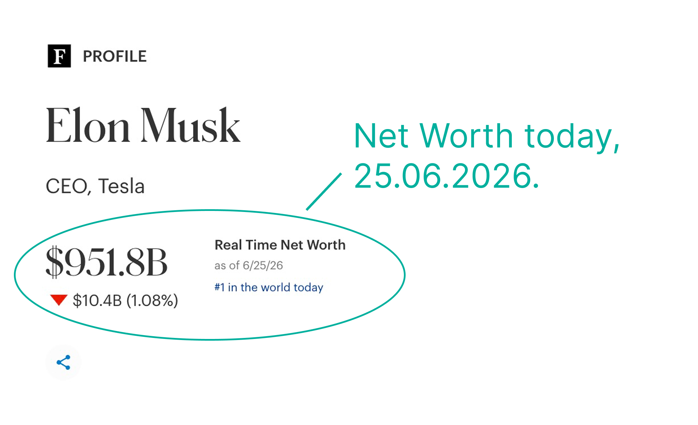

Yesterday Musk was a trillionaire today he is not

Hi, I’m Sandra Becker, and I love digging into data. Datawrapper’s recent piece on the world’s first trillionaire sparked the idea for this post.
One of the most interesting ideas in the DataWrapper's blog post was the distinction between paper wealth and actual cash wealth. Most billionaire fortunes are tied to the market value of the shares they own rather than cash, meaning their wealth exists largely on paper and can change quickly as stock prices move.
This volatility is striking. When Datapaper published its chart on 18 June, Elon Musk's estimated net worth exceeded $1.1 trillion. Just a few days later, falling share prices reduced Forbes' real-time estimate to around $952 billion, a drop of about $148 billion, or 13.5%.

The chart below shows Musk's estimated net worth since 2012. While the most obvious feature is the extraordinary increase over the past year, mainly driven by the SpaceX IPO, the recent swing also highlights how paper wealth can fluctuate dramatically within just a few days.
The SpaceX IPO turned Elon Musk into the world's first trillionaire. But it didn't happen in isolation. Across today's richest people, fortunes have grown dramatically over the past decade, with many of the steepest increases occurring after 2020. Rising stock markets, the pandemic-era tech boom and more recently the AI race created extraordinary gains for founders and major shareholders alike. Musk stands out not because he was the only billionaire getting richer. He stands out because he was already one of the fastest-rising fortunes before the largest IPO in history pushed him even further ahead.
Only the top 8 isn't enough for you? Here you can find the chart for the top 100 billionaires of 2026.
Next, we look at the wealth gap from each billionaire’s perspective. Since every chart uses an individual scale, the differences are easier to read: blue shows the years when Elon Musk’s wealth was still lower, while green marks the period when his fortune had moved ahead. For most of these comparisons, the decisive change came around 2020. Several other billionaires also saw their wealth rise during those years, but Musk’s increase was much steeper. That exceptional jump allowed him to overtake many of the world’s richest people in a relatively short period of time.
Only the top 8 isn't enough for you? Here you can find the chart for the top 100 billionaires of 2026.
The next fascinating chapter may come if OpenAI, led by Sam Altman, and Anthropic, co-founded by Dario Amodei, eventually go public. Whether they can reach the same extraordinary heights as Elon Musk remains to be seen.
• • •
© 2026 Sandraviz.com. All rights reserved.